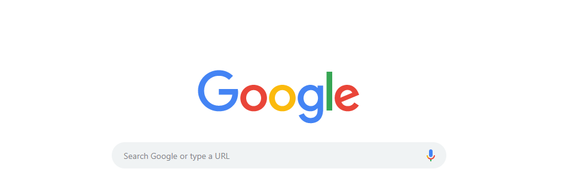
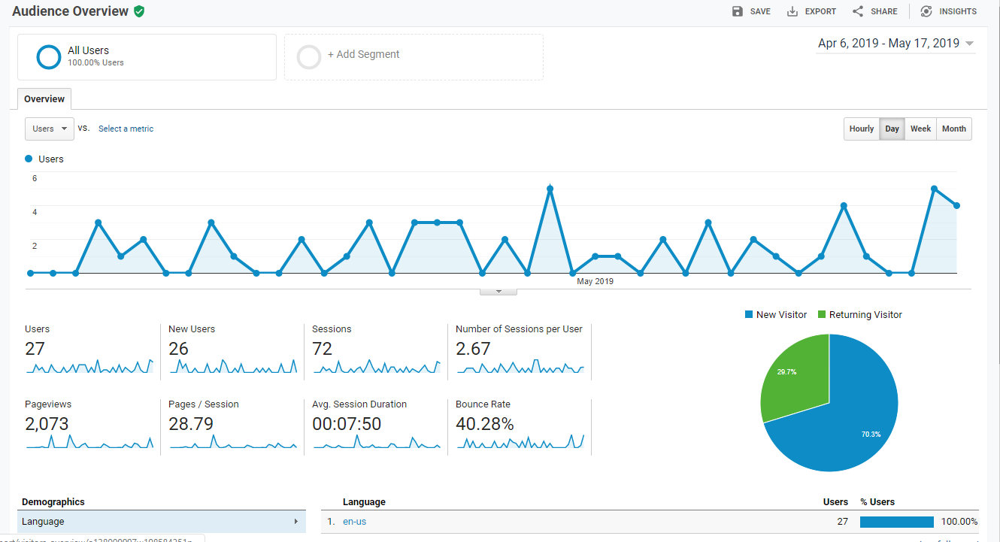
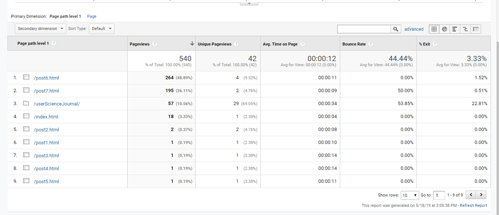
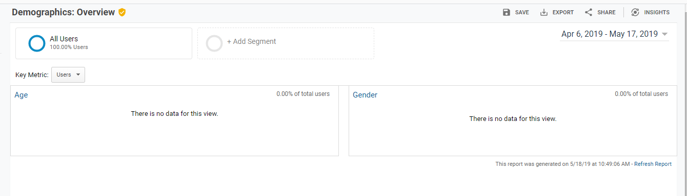

SO MUCH DATA!!!
So we all know that websites track what we do online. In a sense, it makes our internet time easier.
 Google Home ScreenImagine an internet where:
- Pages don't remember what you were looking at before.*eeek!
- None of your payment information is held, so you have to enter it again!
- Remember having to log in EVERY SINGLE TIME?? *whew!
- Remember remembering ALL of your passwords? *The Horror!!
We take for granted just how easy having that data out there has made it for us to brave the digital frontier, however this luxury is not free. We provide marketers and advertisers with information about our likes and habits just by clicking away at our machines.
Thankfully, Google makes those same tools available to just anyone so we can use all that data to find out what is working and what needs to be tweaked on our websites.
What Are We Looking For?
This week, we are using Google Analytics to peak into the demographics and habits of our users
 Google Analytics
Google Analytics
Hypothosis
Before we get started, a few thoughts about my users and the sort of data I will see from them:
We will attempt to focus on this statements:
- I expect most of my users to be in the 30's to 40's age bracket as those are the ages of most of my classmates and they are likely the most likely to click onto my USJ
- I expect most trafic to be coming from a desktop. I do my homework on a desktop, that's what I'd be looking on.
- I expect the Accessibility Post to be the most popular...however that is mostly due to the meme of Ned Stark and my own foolish attempts at humor.
Results
 Google Audience OverviewI had to set the parameters back to the beginning of the quarter to get some data, the instructions indicated just a few days of data but there unfortunately was not much there.
Things that I noticed:
- Most of the users to my site were new users, this made sense as the journal is only about 7 weeks old.
- Users spent an average of about 7 minutes on the page at a time.
- Users tended to look at about 28 pages before leaving (wow!)
- In total, the pages have been viewed 2,073 times...that figure blew me away!
 Detail of Google Analytics information page
Detail of Google Analytics information page
As expected, all of my users were in the United States, I was surprised to see when people were most likely to be looking:
On the weekends, the site picked up trafic between the hours of 8 am and 2 pm...(prime homework hours)
During the weekdays, traffic focused on the evening hours with most users arriving sometime between 5 and 10 pm.
Mobile vs. Desktop
With so much emphasis on Mobile I was surprised to see much more desktop access, this is likely due to the fact that we tend to complete our homework on laptops/desktops so that is what we would be using to access each others' journals.
The most popular page:
 Posts by PopularityBlame it on "Game of Thrones Fever" but accessibility-retrofit indeed proved to be the most popluar post. It's exciting to be able to see how users are reacting to your content and which posts are they being drawn to/coming back to.
Conclusion
It's really useful to be able to see so much of what is drawing users to your site, but Google Analytics is not a perfect system.
I was disappointed to see that the Demographic Information was not included in the evaluation. I need to do a little more research to see if this is information that I need to collect myself (include a survey which asks)
or if this is something which will fill up over time (keep adding new posts and wait for the Google Magic)
 Detail of Google Analytics Demographics PageI had dabbled with the idea of using Google Analytics before giving it a try on this website, but I never thought that it would be as powerful a tool.
These tools allow us to track how are site is being used, how often, and by whom. With this information, we can tailor the experience to invite more and more users to come back.